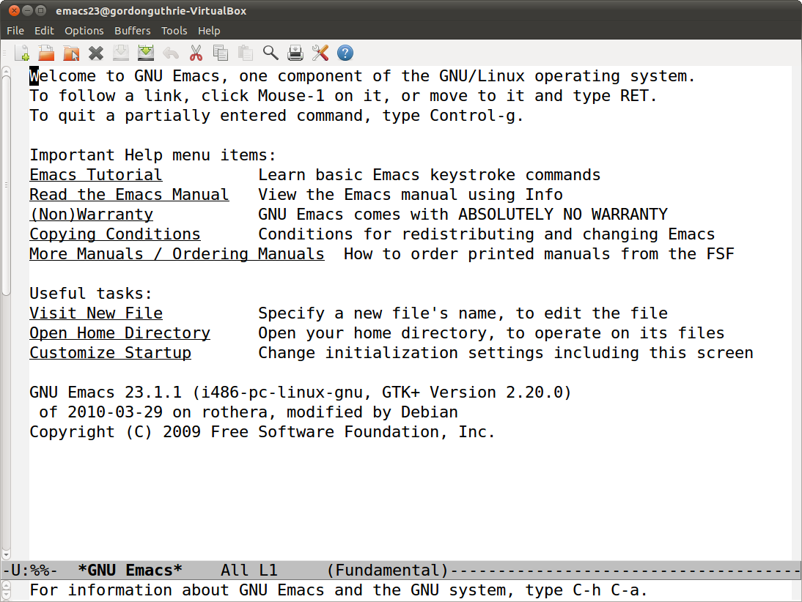

Getting Started¶
What Needs To Be Installed¶
This book assumes that you have a clean install of Ubuntu 10.10 Desktop which can be obtained from Ubuntu.
Having created a clean install the Emacs package (version 23.1+1-4ubunutu7) should be installed.
This can be done by:
selecting the Ubuntu menu System -> Administration -> Synaptic Package Manager
use the Quick search input box in the top right
select emacs by clicking the tick box in the first column
click the Apply button and click Apply in the Summary dialog box
A dialog box entitled Applying Changes will appear. When the changes have been applied you may close the dialog box.
Please only install the Emacs package as indicated. The exercises in this book are predicated on that being the case.
How This Book Will Work¶
The work on learning Elisp will take place within an X-Windows enabled version of Emacs as shown below.
